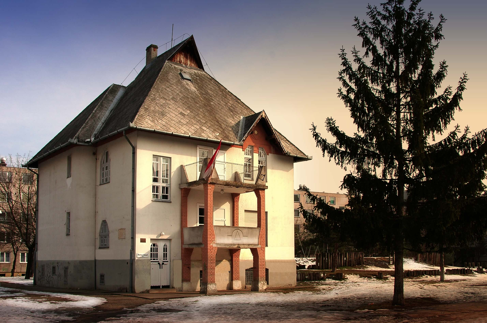

Debreceni Irodalom Háza
Hegymenet, avagy a debreceni irodalom házának keresése
Ez a mese is úgy kezdődik, mint akárhány másik: volt egyszer egy vándorlegény. A vándorlegény sokfelé járt a világban, sokat látott, sokat tapasztalt és sokat is írt. Magának naplót írt, a barátainak leveleket, mindenki másnak pedig meséket. Egyszer meghallotta, hogy Debrecenben közös otthonra lelnek mindazok, akik ott valaha mesét, verset, regényt, színjátékot, tankönyvet, kiáltványt, tanulmányt vagy bármit is írtak – gondolta, biztosan van ott számukra egy nagy ház, ahol talán ő is megpihenhet végre. Vándorlása során útba ejtette hát Debrecent, hogy azt a házat megkeresse. Tűvé tette érte a várost, kérdezősködött erre-arra, de mindenki csak annyit felelt neki, hogy hallani már hallott a debreceni irodalomról, de sajnos nem ismeri, azt meg végképp nem tudja, hol lakhat – jobb, ha ő is tovább áll.
Telt-múlt az idő, s a vándorlegény, vagy talán az unokája, egy alkalommal ismét betért Debrecenbe, remélve, hogy nagyobb sikerrel jár. Ekkor néhányan már útba tudták igazítani, azt mondták, talán a Hatvan utcán keresse az irodalom házát. A vándorlegény ott aztán talált is egy hosszú fehér házat, nagy kerek kapuval s tíz ablakkal, amit Csokonairól neveztek el. Hiába adta azonban a nevét a nagy háznak egy költő, az irodalom csak megtűrt lakó volt a legkisebb szobában. Sokan szorongtak akkor már ott együtt, azok közül, akik valaha mesét, verset, regényt, színjátékot, tankönyvet, kiáltványt, tanulmányt vagy bármit is írtak – de olyan szűk volt a hely, s úgy össze volt keveredve-zavarodva egymással mindenki, hogy egy szavukat sem lehetett kivenni – a vándorlegény ezért inkább menekülőre fogta. Ő békességre, tágasságra és rendre vágyott, ilyen otthont keresett.
Telt-múlt az idő, s a vándorlegény, vagy talán a dédunokája, egy alkalommal ismét betért Debrecenbe. Ezúttal egy még nagyobb házhoz irányították, ez már egyenesen palota volt, két emelettel, kupolával, egy nagy zöld völgy végében, körötte árnyas fákkal, csobogó forrásokkal. A hatalmas palotában néhányuknak az irodalomból olykor már külön szobája is volt, ám a többiek egyetlen szekrényben zsúfolódtak össze. Itt azonban már volt gazdájuk, több is, aki vigyázott rá, hogy ne keveredjenek össze, rendbe szedte, sorba állította, felírta őket, így legalább a békesség megvolt közöttük. A vándorlegény azonban nem szerette az egyenlőtlenséget, így továbbra sem akart maradni.
Telt-múlt az idő, s a vándorlegény, vagy talán az ükunokája, egy alkalommal ismét betért Debrecenbe. Abban most már mindenki biztos volt, aki megkérdezett, hogy az irodalomnak saját háza van, de olyan messze a belvárostól, mondták, hogy még a tapasztalt vándorok is nehezen találják meg. A vándorlegény azonban addig kereste, egyik kertségből a másikba járva, míg végül a Vénkertben rábukkant. Magas, jól záródó falanxon kellett áthatolnia, de bent, a körbezárt téren dombok és völgyek zöldellettek, gyerekek szaladgáltak, labdáztak és kiabáltak. Középen barátságos, fehér falú, vörös téglás kis házikó állt egy lankás domb tövében, a debreceni irodalom első saját háza. Volt neki emelete, két erkélye, magas palateteje, nagy ablakai délutáni napsütéssel, pompás falépcsője pompás nyikorgással, volt saját kiállítása, raktára és könyvtára. A kiállítás sorba szedte a debreceni irodalmat az elejétől, s ha nem is jutott benne mindenkinek hely, aki valaha mesét, verset, regényt, színjátékot, tankönyvet, kiáltványt, tanulmányt vagy bármit is írt, mégsem zúgolódott senki, hiszen végre mind együtt voltak, mindenki elfért, mindenkinek lehetett szava és azt meg is lehetett érteni. Ki a raktárban, ki a kiállításban lelt otthonra, ki csak rendszeres vendég volt, de mindenkinek megvolt a helye, mindenkihez el lehetett jutni s mindenkivel szóba állni. A rendről és a szórakoztatásról szakszerű személyzet gondoskodott, akiknek semmi más gondolatuk nem volt, mint az irodalmat kiszolgálni, kényelméről gondoskodni, jövőjét biztosítani, jelenét fölpezsdíteni.
A vándorlegénynek mindez nagyon megtetszett, úgy érezte, megtalálta az otthonát, amit annyi éven át keresett, így hát beköltözött. Besorolták a leltárba, kapott cédulát, mappát és dobozt, kényelmes helyet, jó társaságot. A személyzet a meséket összegyűjtötte, leírta, felolvasta – hasznát vette. A vándorlegény elégedett volt.
A vándorlegénynek mindez nagyon megtetszett, úgy érezte, megtalálta az otthonát, amit annyi éven át keresett, így hát beköltözött. Besorolták a leltárba, kapott cédulát, mappát és dobozt, kényelmes helyet, jó társaságot. A személyzet a meséket összegyűjtötte, leírta, felolvasta – hasznát vette. A vándorlegény elégedett volt.
Telt-múlt az idő, s a vándorlegény és barátai, a debreceni irodalom házának összes lakója, azon vette észre magát, hogy egyre kevésbé kap levegőt, egyre közelebb kell szorulnia szomszédjához, mert a házba egyre többen költöznek be s egyre kényelmetlenebbé válik minden. A dobozok kidagadtak, a könyvek a polcokról átfolytak az asztalokra, a polcok közötti utakra ládák sorakoztak be, a falak pedig ahelyett, hogy kizárták volna, beeresztették a legnagyobb ellenséget, a vizet, aki magával hozta harcostársát is, a penészt. Aki a kiállításban lakott, már régen elunta magát, elfáradt és megöregedett a magamutogatásban, hiszen még annyit sem mozoghatott a hosszú idő alatt, mint a raktárlakók, akik néha mégis előjöhettek a dobozukból. Az irodalomnak már nem pezsgett a vére, de viszketett a bőre és mehetnéke támadt: kinőtte az egyre piszkosabb-fehér házikót. A vándorlegény azonban, akinek immár cédulája volt, nem mehetett egyedül tovább, csak a többiekkel együtt: meg kellett várnia, amíg a személyzet új otthonról gondoskodik számukra.

Telt-múlt az idő, s a vándorlegény és barátai, sok-sok hosszú és boldog év után egy napon elhagyták szeretett házikójukat, leereszkedtek a dombról. Menet közben kicsit tétováztak, merre menjenek tovább, pár évre fel is tartóztatták, csaknem fogságba ejtették őket, de sikerült megmenekülniük. Amikor meglátták a számukra kiszemelt új házat a Péterfián, azonnal ráismertek, hiszen az új ház régebbi volt, mint az összes többi, s már a vándorlegény üknagyapja is járt benne, amikor először kereste a debreceni irodalom házát.
Az irodalom most közös címen, társbérletben lakott a szobrászművészettel, de jól megférnek a nagy udvar két oldalán. Az árkádok alatt, bent, a félhomályos szobákban, hazatalált Csokonai és mindazok, akik őt ebben segítették, mindenki láthatja végre, hogyan sziporkázik Oláh Gábor agya, s nem csak a dobozlakóknak kellett hallgatniuk őt napestig. A kiállításon bemutatott kincseknek nincs idejük elunni magukat az események sűrű váltakozásában. Az új lakóknak van szabad hely, szívesen látnak bárkit. A gyerekek már nem csak a parkban, de a bent a házban is játszhatnak és kiabálhatnak. A raktárban a könyvek sosem látott mennyiségben és rendben sorakoznak a polcokon, a dobozok pedig kidagadt állapotukban is jól elférnek rajtuk.
Most itt vagyunk s most jó itt nekünk – mondta a vándorlegény vagy valamelyik unokája –. Talán megérkezünk, talán visszatalálunk, de talán egyszer majd tovább megyünk. A mesét nem mi írjuk tovább, hanem az idő.
Szabó Anna Viola, főmuzeológus
Déri Múzeum, Fotótár